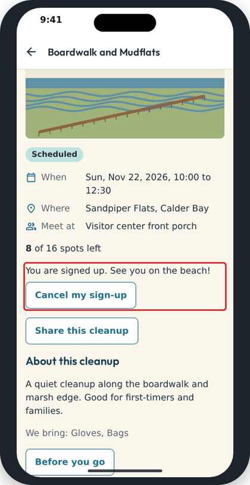

React Native & Expo · Part 2 · Session 12 of 26 · 3 hours
Session 12
Reaching the API and TanStack Query on Mobile
The phone joins the crew, and the cache learns to listen to it.
Today
Three hours, two lessons
| 0:00 | Warm-up: sign-in and deep links |
| 0:10 | 5.1 Reaching the API from a Phone: model, demo |
| 0:40 | 5.1 Lab, then start the project |
| 1:20 | Break (10 min) |
| 1:30 | 5.2 TanStack Query on Mobile: model, demo |
| 2:10 | 5.2 Lab, then start the project |
| 2:50 | Exit ticket, homework, Checkpoint 2 next time |
LABS Lab files are in
labs/module-12. Work in starter/, never the solution.Warm-up · 6 minutes
Session 11, from memory
- Where does the session live on a phone? What can the web preview not do?
- The API restarts. What does it answer your old token?
- What does Share this cleanup put in its message?
ASK Then: what has the phone shown since Lesson 1.3?
5.1
Reaching the API from a Phone
The place is the same; the directions change.
5.1 · Mental model
The meeting point
- localhost means "this device": it never travels
- The web preview stands next to the API: "over here" works
- A phone drives in over Wi-Fi: it needs the road and the landmark
- And the computer must accept visitors:
--host
5.1 · Where is localhost?
One API, four sets of directions
| Web preview, iOS Simulator | http://localhost:4000 |
| Android emulator | http://10.0.2.2:4000 |
| Expo Go on a phone | http://192.168.1.42:4000 + --host |
NOTE Simulator and emulator rows: the platforms' documentation. Yours: your own address.
5.1 · Live demo
Open the API to your network
node server.ts --host
Shoreline Crew API running at http://localhost:4000/api on your network: http://192.168.1.42:4000/api sample sign-in: maya.okafor@example.com (organizer) or theo.nakamura@example.com (volunteer), password shoreline-demo Press Ctrl+C to stop.
WATCH The on your network line: the phone's address. Trusted Wi-Fi only; Ctrl+C when done.
5.1 · Live demo
Test the road before the app drives on it
curl http://192.168.1.42:4000/api/health
{
"ok": true,
...
}
WHY Then the same address in the phone's browser: it splits every problem in half.
5.1 · Predict, then check
The same curl, API without --host
curl http://192.168.1.42:4000/api/health
curl: (7) Failed to connect to 192.168.1.42 port 4000 after 0 ms: Connection refused curl exit code: 7
WATCH Refused, not blocked: nobody listens on that address. localhost still answers.
5.1 · Pictures follow
Asked at the network address
curl http://192.168.1.42:4000/api/sites
...
"url": "http://192.168.1.42:4000/images/sites/pelican-point.jpg",
"url": "http://192.168.1.42:4000/images/sites/driftwood-cove.jpg",
...
WHY The API builds each URL from the address the request arrived at.
5.1 · No CORS on a phone
Who sends an Origin?
- Expo Go (native fetch): no Origin, no header needed
- Web preview,
Origin: http://localhost:8081: allowed - Web preview on a phone,
Origin: http://192.168.1.42:8081: blocked - The phone runs Expo Go; the web preview stays on the computer
WHY CORS is a browser rule. All three measured by the kit against the course API.
5.1 · One variable, many devices
EXPO_PUBLIC_API_URL is in the bundle
- Change
.env.local, thennpx expo start --clear - One Metro, one address: phone and web preview share it
- No
/apiat the end, no spaces around= - A variable set in the shell wins over the file
RULE Profile's Connection section shows the address the bundle has.
5.1 · The advice
addressAdvice, run with Node
localhost:4000 web Check that shoreline-api is running, then try again. localhost:4000 android On Android, localhost is the device itself. Put your computer's network address in .env.local (10.0.2.2 on the emulator). localhost:4000 ios On a phone, localhost is the phone itself (only the iOS Simulator shares your computer's). Put your computer's network address in .env.local. 10.0.2.2:4000 web 10.0.2.2 works only inside the Android emulator: the web preview uses localhost.
WHY The client's second sentence, per address and platform: no phone needed to check it.
5.1 · The Connection check
An eight-second limit
shoreline-crew/src/components/ConnectionCheck.tsx
async function run() { setCheck({ kind: 'checking' }); const controller = new AbortController(); const timer = setTimeout(() => controller.abort(), timeoutMs); const started = Date.now(); try { await getHealth(controller.signal); setCheck({ kind: 'connected', ms: Date.now() - started }); } catch (error) { setCheck({ kind: 'failed', message: describeError(error) }); } finally { clearTimeout(timer); } }
WHY A wrong address on Wi-Fi can hang; the abort turns into the advice.
5.1 · Project
Connection, on Profile

5.1 · Guided lab · 20 minutes
Addresses as data
labs/module-12/l5_1-reaching-the-api-from-a-phone/starternpm test: six failures, and one test that waits- Task 1: read
.env.local, five problems in order - Task 2: the address table as a function
- Done:
Tests: 7 passed, 7 total
MORE Task 3 at home: a health check that gives up and names the address.
5.1 · Start the project · 20 minutes
Shoreline Crew on Your Phone
- Step 1: your address from
› Metro: exp://…(172.? WSL first) - Step 2:
node server.ts --host, then curl/api/health - Step 4:
.env.exampletable,.env.local,--clear - Steps 3 and 5 to 9 at home (and the phone, on your Wi-Fi)
WATCH Venue Wi-Fi keeps devices apart? Hotspot, emulator, or the web preview.
10
Break
Back at 1:30. Who reached /api/health from a phone?
5.2
TanStack Query on Mobile
The same cache, another world.
5.2 · Mental model
The radio check
- TanStack Query: the crew leader with the notebook (the cache)
- In a browser, people shout: focus and online events
- On a phone, you hand out the radios
- AppState: back in the foreground · NetInfo: signal lost, signal back
5.2 · What a phone does not tell the cache
Three moments, three wires
| Back to the app | AppState → focusManager.setFocused |
| Connection lost or found | NetInfo → onlineManager |
| Back to a screen | useFocusEffect → useRefreshOnFocus |
WHY Tabs and stacks keep screens mounted: nothing mounts again.
5.2 · Install
One command, two packages
npx expo install @tanstack/react-query @react-native-community/netinfo
› Installing 1 SDK 58.0.0 compatible native module and 1 other package using npm > npm install --save @tanstack/react-query added 3 packages, and audited 799 packages in 2s ... 8 moderate severity vulnerabilities ...
WHY The lesson's card. The vulnerabilities line is npm's audit, not an error.
5.2 · The cache
A list that pages itself
shoreline-crew/src/api/queries.ts
export function upcomingEventsQuery(viewer: string) { return infiniteQueryOptions({ queryKey: ['events', 'upcoming', viewer], queryFn: ({ pageParam, signal }) => getEvents(`when=upcoming&page=${pageParam}&perPage=${perPage}`, signal), initialPageParam: 1, // The page after the last one loaded, or undefined: there is no next page getNextPageParam: (lastPage) => lastPage.page.page < lastPage.page.totalPages ? lastPage.page.page + 1 : undefined, }); }
WHY
hasMore → hasNextPage · loadNextPage() → fetchNextPage()5.2 · The connection
NetInfo feeds the onlineManager
shoreline-crew/src/hooks/useOnlineManager.ts
useEffect(() => {
// The web preview keeps the browser's own online and offline events
if (Platform.OS === 'web') {
return;
}
// NetInfo calls the function with every change of connection, and returns a way to stop
onlineManager.setEventListener((setOnline) =>
NetInfo.addEventListener((state) => {
// isConnected is null while NetInfo does not know yet: count that as online.
// Not isInternetReachable: shoreline-api is on your Wi-Fi, which needs no internet.
setOnline(state.isConnected !== false);
}),
);
}, []);
WHY
isConnected, not isInternetReachable: the API is on your Wi-Fi.5.2 · Offline
Paused, not failed
- No request at all:
'paused', the cached cards stay - Back online: it carries on by itself
- Mutations pause too (in memory only)
- Without the manager: requests, retries, then an error
LAB Lab 5.2 Task 2 proves the cache's half headless.
5.2 · In the web preview
The browser plays the phone

5.2 · Live demo
Infinite options in useQuery
npx tsc --noEmit
src/app/(tabs)/index.tsx:34:27 - error TS2769: No overload matches this call. src/app/(tabs)/index.tsx:91:16 - error TS2339: Property 'hasNextPage' does not exist on type 'DefinedUseQueryResult<InfiniteData<Page<CleanupEvent>, unknown>, Error>'. ... Found 8 errors in the same file, starting at: src/app/(tabs)/index.tsx:34
WATCH Infinite options go with useInfiniteQuery. Metro would not have minded.
5.2 · Live demo
Sign up: the API decides
POST /api/events/e09/signups (as Theo)
HTTP/1.1 201 Created
{
"eventId": "e09",
"status": "confirmed"
}
WHY A spot was left: confirmed. Now 8 of 16.
5.2 · Predict, then check
The same POST, again
POST /api/events/e09/signups (as Theo, again)
HTTP/1.1 409 Conflict
{
"error": "conflict",
"message": "You are already signed up for this cleanup."
}
WHY A repeat is harmless: that is why a paused sign-up may go out late.
5.2 · Invalidate what changed
onSettled: yes or no, refresh
shoreline-crew/src/api/mutations.ts
// A sign-up changes the spots left (on every list and cleanup screen) and your own sign-ups. // Returning the promise keeps the mutation pending until the screens have the new answers. function refreshSignups() { return Promise.all([ queryClient.invalidateQueries({ queryKey: ['events'] }), queryClient.invalidateQueries({ queryKey: ['signups'] }), ]); }
WHY Two keys reach the list, every cleanup screen and My cleanups.
5.2 · Project
After Sign up

5.2 · Guided lab · 20 minutes
The cache on a phone
labs/module-12/l5_2-tanstack-query-on-mobile/starter- First failure:
No QueryClient set - Task 1: the provider · Task 2: the online manager
- Offline: no request, "Waiting for a connection…"
- Done:
Tests: 5 passed, 5 total
MORE Task 3 at home: getNextPageParam and Load more.
5.2 · Start the project · 20 minutes
Shoreline Crew on the Cache
- Step 1:
npx expo installboth packages - Step 2:
ended.ts,queries.ts, the provider after!ready - Step 3: both hooks in the root layout, above the early return
- Steps 4 to 10 at home: the screens, sign-ups, My cleanups
WATCH The longest project of Part 2 so far: plan the time.
Wrap-up · 4 minutes
Exit ticket
- "Could not reach the server at
http://localhost:4000": two fixes? - What must a phone app tell TanStack Query that a browser tells it?
- Why invalidate
'events'and'signups'in onSettled?
WHY No notes. Workbook Exit Ticket box or a sticky note on the way out.
Before Session 13
Homework and bring list
- Finish both projects; exercises; both quizzes; both journals
- Labs: 5.1 Task 3 and 5.2 Task 3
- Force-quit the app: what is remembered, what reloads?
- Bring: the app at the end of 5.2, committed; your phone
NEXT Session 13: Storage and Mobile Forms, with Checkpoint 2.